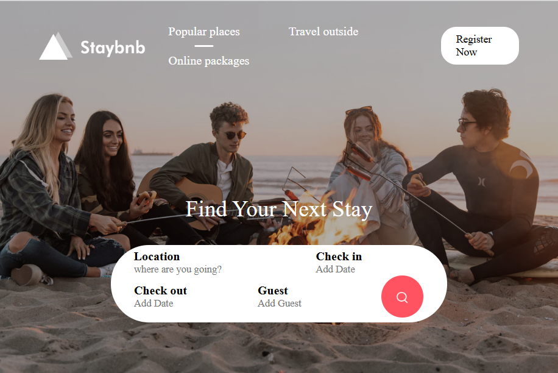
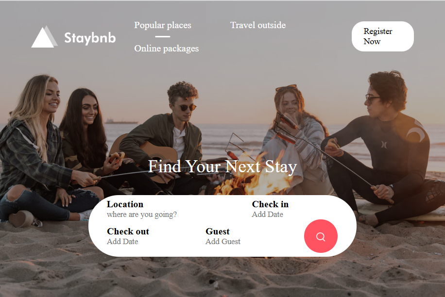

Udemy docker course
學習成果展示
製作可計算造訪次數的網頁
以dockerfile製作python flask image 及拉取 redis image
本專案使用的dockerfile、docker-compose及其他的docker學習:Github
 

展示了前後端整合架構(以網頁作呈現)，包含以下特點：
多伺服器架構：利用 Docker Compose 部署三個獨立的 server.js 伺服器，模擬高併發環境下的多實例應用部署。
靜態網站設計：採用 HTML 和 CSS 製作具有良好使用者體驗的靜態網站，展示網站前端設計能力。
負載平衡：通過 Nginx 作為反向代理和負載平衡器，分配用戶請求至多個伺服器，提高系統的可用性和效能。